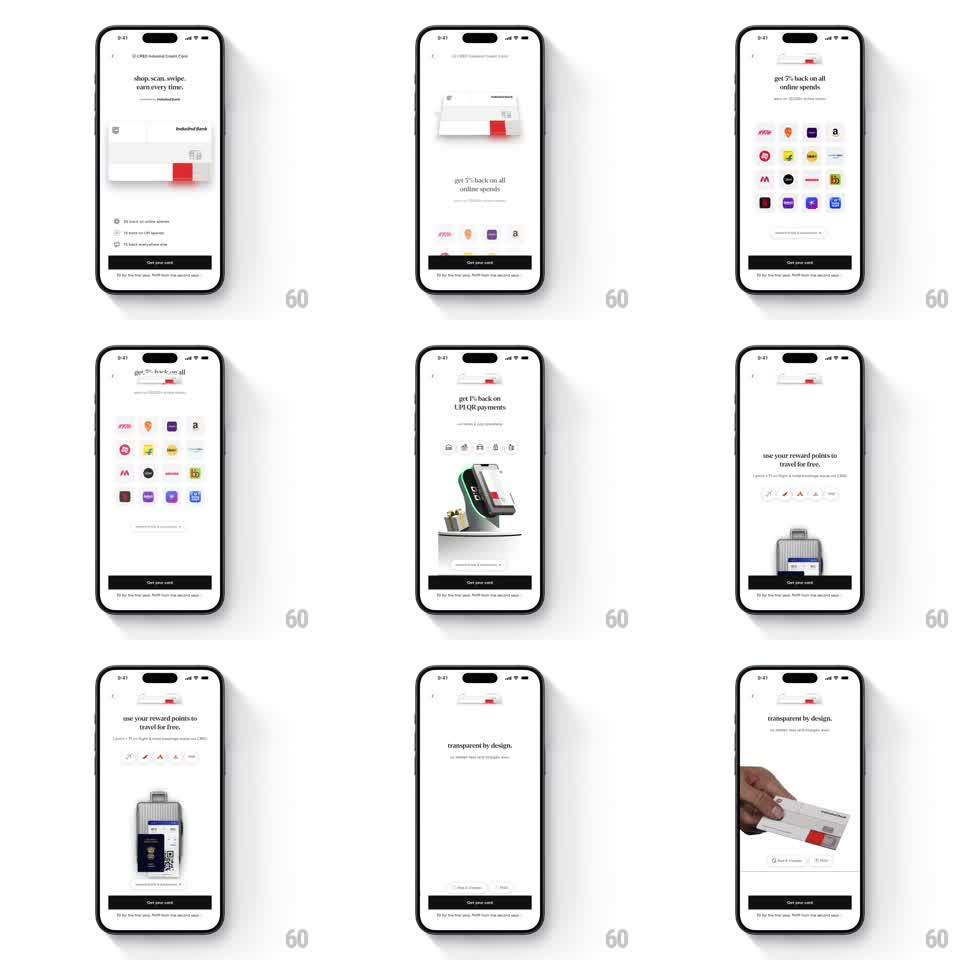

Media
Frame-by-frame

Rebuild this interaction 1:1: CRED's credit-card offer pages - swiping pages through full-screen benefit sections (5% back online, 1% back on UPI, travel points, transparent by design) while the card visual docks into the header and each section's illustration takes the stage.

Rebuild this interaction 1:1: CRED's credit-card offer pages - swiping pages through full-screen benefit sections (5% back online, 1% back on UPI, travel points, transparent by design) while the card visual docks into the header and each section's illustration takes the stage. ## Integration Integration: stack-agnostic spec - springs given as stiffness/damping, timed motions as duration + curve; map every value to your framework and animation library of choice. ## Scene CRED card product page, white: a persistent header strip with a small card art, then paged sections - "shop, scan, swipe. earn every time." with the card hero, "get 5% back on all online spends" with a grid of brand logos, "get 1% back on UPI QR payments" with a POS-terminal illustration, "use your reward points to travel for free" with a suitcase/passport, "transparent by design" with the card in hand. A black "Get your card" button pins the bottom. ## Motion spec Pattern: paged benefit sections with a docking card visual. - Vertical swipe pages whole sections with spring settling (spring ~300/20); the section indicator under the header advances with the page. - The first section's large card art shrinks and docks into the header as you leave it (scale + translate interpolated with page progress, so the header card is a mini of the hero). - Each section's illustration enters on page-in: brand grid pops in row by row (60ms stagger, scale 0.9 -> 1), POS terminal rises with a tilt settle (spring ~280/16), suitcase slides up (translateY 40 -> 0, 300ms), hand+card from the left (translateX -30% -> 0, spring ~260/14). - Copy (headline + subcopy) fades up 100ms before its illustration on every page. - The "Get your card" button and header stay fixed through all paging. ## Calibration - Paging is one-section-per-swipe, not free scroll - the spring snap is the whole feel. - Illustrations are centered in a fixed stage zone; only their entrance differs per section. ## Reduced motion Sections crossfade (300ms); illustrations fade in place (200ms). ## Don't miss - The header card appears only after the hero docks - it fades in as the hero shrinks, one continuous morph. - The brand-logo grid staggers top row first, left to right.